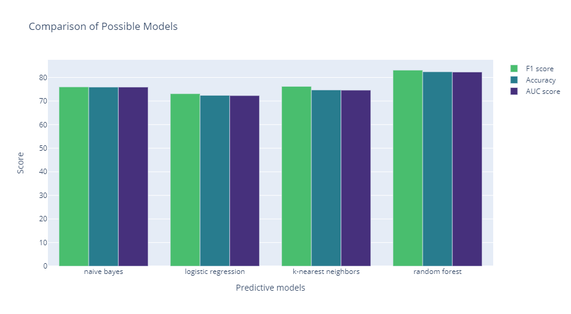
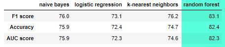
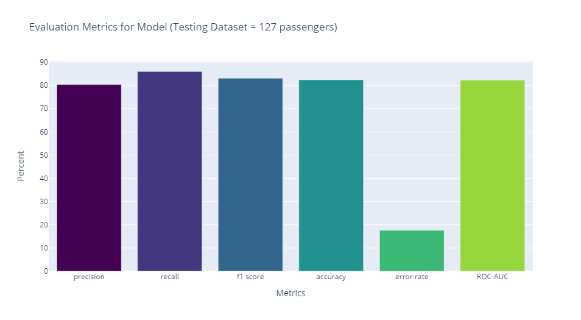

Titanic Survival Classifier
Model analysis to improve prediction.
Model balancing
Source data set:
RangeIndex: 712 entries, 0 to 711
Data columns (total 8 columns):
# Column Non-Null Count Dtype
--- ------ -------------- -----
0 Survived 712 non-null int64
1 Pclass 712 non-null int64
2 Sex 712 non-null object
3 Age 712 non-null float64
4 Fare 712 non-null float64
5 Embarked 712 non-null object
6 Name 712 non-null object
7 SibSp 712 non-null int64
Note: SibSp = Number of Siblings and Spouse
Target variable: Survived (1 = True, 0 = False), with the following counts:
0 = 424
1 = 288
In order to provide a more balanced data set, oversampled survived by duplicating 136 randomly selected records from the Survived data set.
Feature selection
- Converted Age to age bins. Increase age bins from 4 to 7 bins, to test impact of model accuracy.
- Parsed out title from full name as its own variable. Converted to common titles Miss, Mrs. and Mr., and bundled the remaining titles as VIP. About 3% of sample records were classified as VIP.
- Used
dummiespandas function to convert the following features:
Sex, Pclass, Embarked, SibSp, age_binned - Reviewed correlation matrix of features to survival rate, and retained for the final model features with a coefficient with an absolute value greater than 0.09.

Final list of features:
'Fare', 'female', 'male', 'Cabin Class 1', 'Cabin Class 3', 'Cherbourg', 'Southampton', 'SibSp_0', 'SibSp_1', 'Age (18, 25]', 'Mr.', 'Mrs.', 'Miss'
Model Evaluation
Using a 20% test sample, the following models were evaluated, with Random Forest providing the highest prediction accuracy:


Final model metrics

- precision: 80.4% - how often is yes prediction correct - TP/(TP + FP)
- recall: 86.0% - how often predict yes when the answer is actually yes TP/(TP + FN)
- f1 score: 83.1% - precision and recall combined
- accuracy: 82.4% - how often is the model correct - (TP + TN)/TOTAL
- error rate: 17.6% - reverse of accuracy, how often the model is incorrect (FP + FN)/TOTAL
- ROC-AUC: 82.3% - Area Under the Curve, ability of the model to distinguish between positive and negative